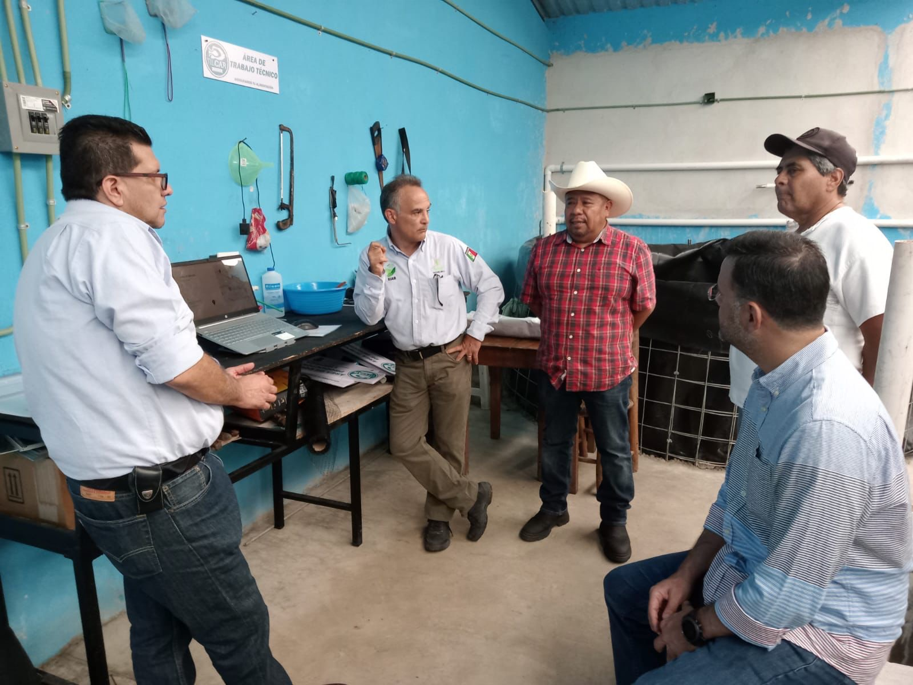
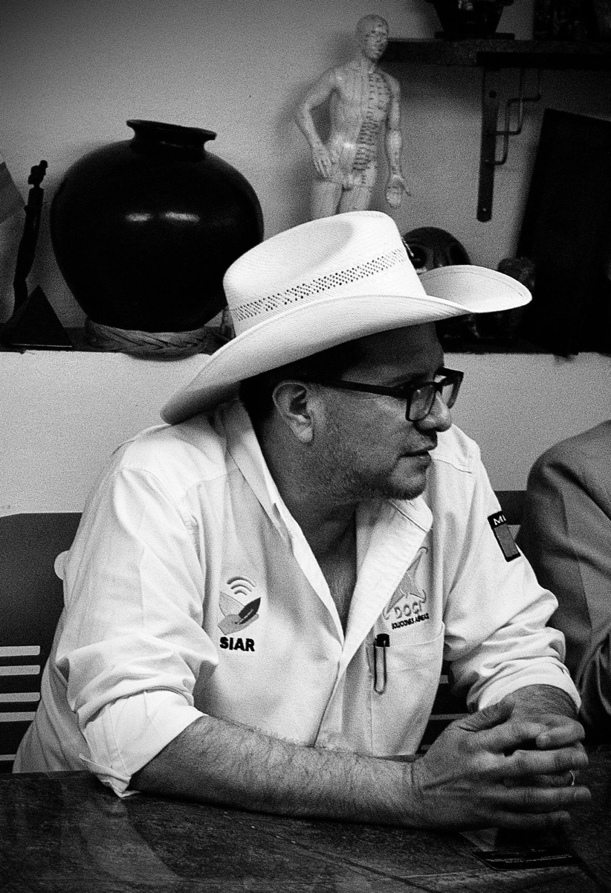
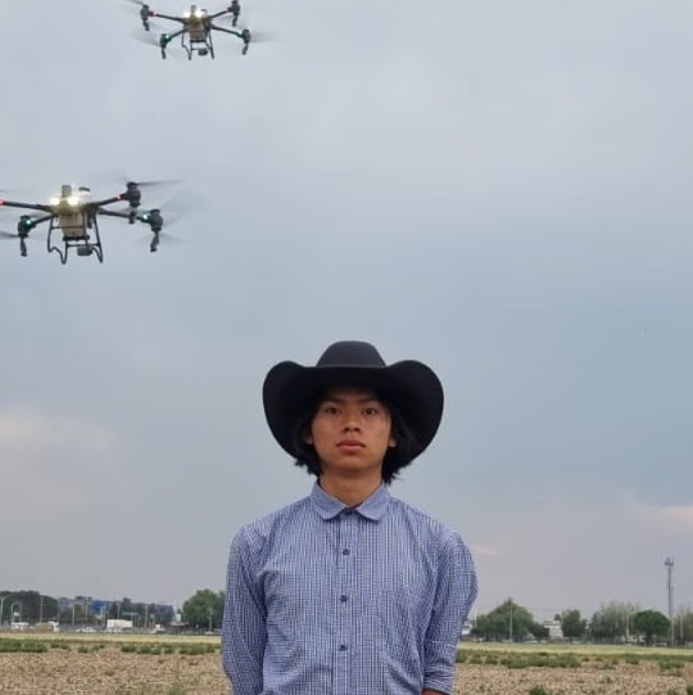
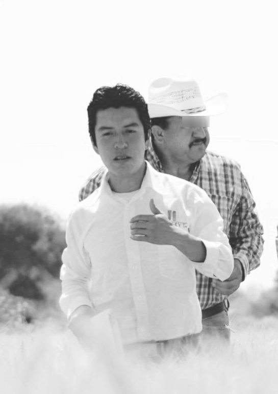

Consultoría
con raíz
veracruzana.
DOMO Consultoría Integral S.C. fue constituida en febrero de 2005 en Xalapa. Veinte años acompañando decisiones que requieren rigor antes que velocidad.

Una firma con dos vidas,
una vocación.
La consultoría sin método es opinión. La tecnología sin método es ruido. DOMO existe para mantener al método como el lugar donde lo público y lo técnico se encuentran.
Fundada como sociedad civil veracruzana en 2005, DOMO acumuló dos décadas de práctica en consultoría a organizaciones, cámaras y gobiernos. En 2026 retoma el ruedo con un consejo de socios ampliado y una capacidad técnica nueva: Agrocolectiva, su plataforma propia para censos masivos vía WhatsApp.
Cada hallazgo se demuestra. Cada cifra es auditable. Cada recomendación viene con sus fuentes. Esa es la promesa que nos sostiene.
Veinte años, cinco hitos.
en Xalapa
gobierno estatal
sureste mexicano
tecnológico interno
con Agrocolectiva
Cuatro líneas que no negociamos.
Rigor
Cada hallazgo se demuestra. Cada cifra es auditable. No usamos verbos en gerundio.
Verificabilidad
El trabajo se entrega con sus fuentes y su método publicados. Reproducible.
Acompañamiento
No entregamos y nos vamos. Quedamos cerca cuando el cliente lo necesita.
Ética institucional
No firmamos proyectos que comprometan la integridad del cliente o de DOMO.
Consejo de socios.
Cuatro responsables del rumbo de la firma. Víctor y Fernando son los socios fundadores. Diego y Javier son socios del proyecto Agrocolectiva con responsabilidad ampliada a toda la firma.

Durán Orozco

Martínez

Hernández Ramos

Vargas Lara
Para constancia.
INTEGRAL S.C.
Xalapa, Ver. · 91098